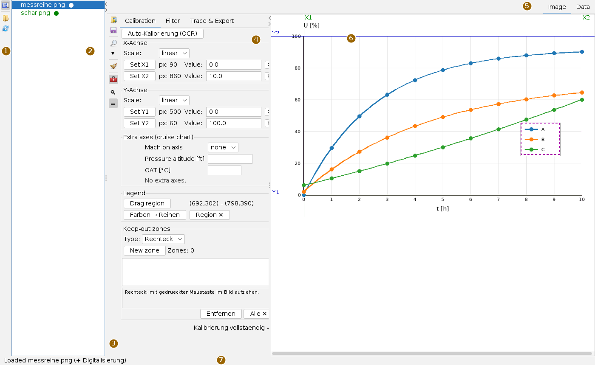
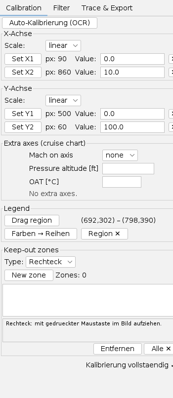
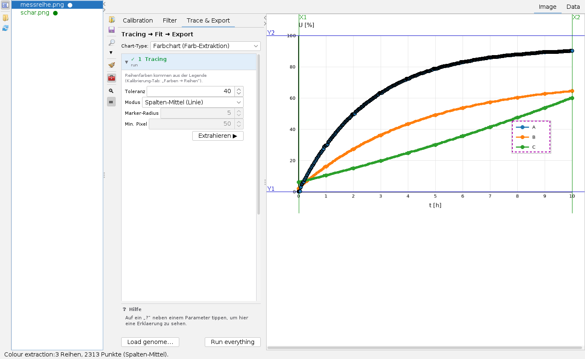
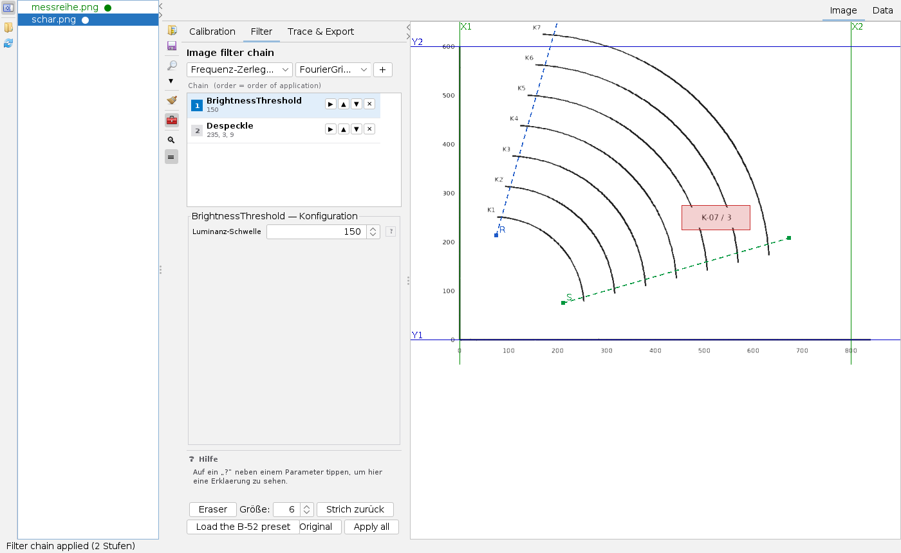
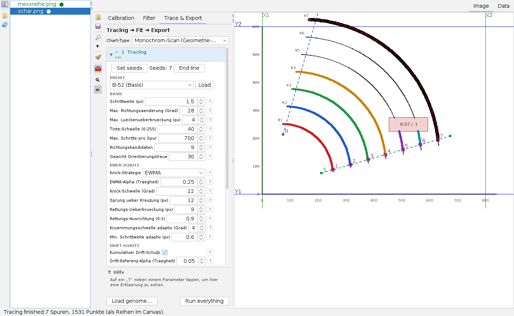
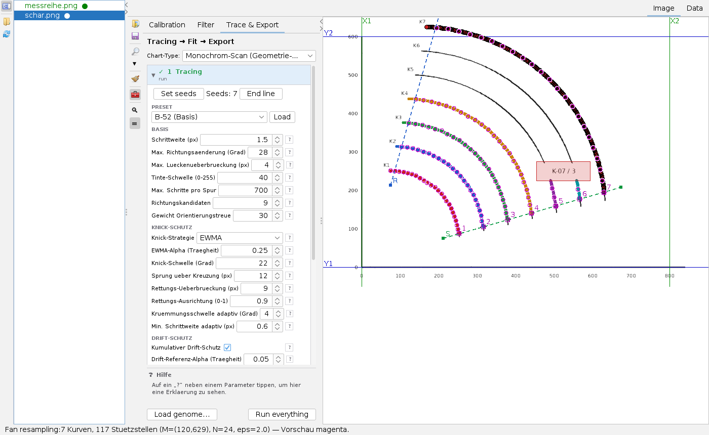
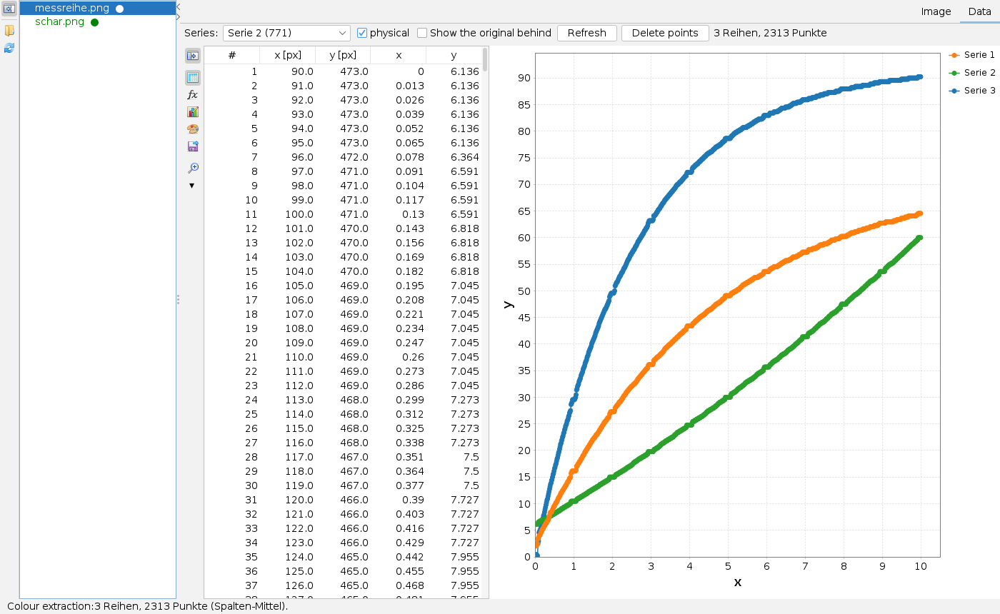
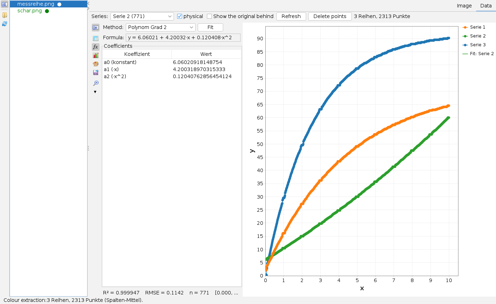

Using the Image Digitizer
User page, as of 6 October 2026. How to load and calibrate a chart image, read a colour chart via its legend, filter and trace a scanned curve family, bring the curves onto a common grid, check them in the data view, fit a formula and write everything out as tables. The pictures are screenshots of the app with two invented charts: a coloured line chart and a curve family on graph paper that looks scanned.
Many labels are not translated yet and appear in German in the English interface – the tracer and filter parameters, the chart types, the resampling methods and several status messages among them; they are marked * below.
The window
Open the app from the Apps menu with Open Image Digitizer… or with Alt+I; an image file (PNG, JPEG, BMP, GIF) opens it directly.

- Directory bar at the far left: fold the directory tree, choose the working directory (the tooltip names the current one), rescan the directory.
- Directory tree: all images of the working directory, recursively. A green dot ● shows that a digitisation (
.digi.json) already exists for the image. A click loads it. - Tool bar: load image, Save digitisation, magnifier on/off and its factor (▾), reset everything (broom, with confirmation, optionally including the working file), fold the tool cards, and below them the cards View / zoom and Filter & Trace.
- Tool cards: the three tabs for the work steps. When you switch to Data on the right they fold away; when you switch back they are as before.
- Status line: messages of all actions; on the right the position under the mouse in pixels and, once calibrated, in axis values.
All mouse modes of the image area – calibration points, seeds, keep-out zones, legend, fan lines, pipette, eraser – exclude each other. Switching one on switches the others off.
The workflow
- Load the image (tool bar or tree). From the colours in the image the app proposes the chart type: colour chart or monochrome scan.
- Calibrate: set two reference points per axis and type in their values.
- Depending on the type: capture the legend (colour chart) or set filters and seeds (monochrome scan).
- Under Trace & Export extract or trace, then resample and fit.
- Check in the Data tab: look at the chart, delete outliers, optionally fit a formula.
- Export and save: the digitisation is stored as
.digi.jsonnext to the image.
Calibrating

Each axis has a box (X-Achse*, Y-Achse*) with Scale (linear or logarithmic) and two reference rows:
- Press Set X1, then click into the image: the spot becomes the first reference point of the x axis, and the line appears in the image (green for x, blue for y). The focus jumps into the Value field.
- Type the axis value (comma or point);
Enteror leaving the field takes it over. - Likewise X2, Y1, Y2. At the bottom it then says Kalibrierung vollstaendig* (calibration complete); ✕ at the end of a row deletes a reference point.
Calibration enables three things: the status line and the data view show axis values, the export of physical values works, and the rectangle spanned by the reference points limits the colour extraction to the plot area. Logarithmic axes are converted logarithmically.
- Auto-Kalibrierung (OCR)* reads the labels at the bottom and left with the bundled digit model and proposes the outermost readable values, only if they form a sequence that fits their position. Date and text axes get no proposal. Always check the proposal.
- Rotating by 90° (card View / zoom) is meant for before calibrating: it resets calibration, series and zones.
- Extra axes (cruise chart): for cruise charts a second, non-linear airspeed scale on the Mach axis; with Pressure altitude and OAT the app computes Mach, CAS and true airspeed for every point.
Legend and keep-out zones
Drag region marks the legend with a rectangle (dashed in the picture). Farben → Reihen* (colours to series) recognises the saturated colours in it and creates one series per colour. The legend itself is left out of the colour extraction; otherwise its swatches would turn up as points.
Keep-out zones block areas for tracing and colour extraction, such as labels, arrows or stamps in the picture. Type Rechteck* (rectangle): drag with the mouse button held; Polygon: click the corners, double-click closes, right-click takes back the last corner. New zone switches the drawing mode on; the list shows all zones, the selected one is highlighted orange. A trace that runs into a zone ends there.
Reading a colour chart

The Trace & Export card leads through four stages – 1 Tracing, 2 Resampling, 3 Fit, 4 Export – each foldable and ticked once it has run. Run everything at the bottom runs them in turn. At the top Chart-Type chooses between colour chart (colour extraction) and Monochrom-Scan* (geometry tracing); a type saved in the working file takes precedence over the proposal.
For a colour chart Extrahieren ▶* (extract) collects the points of each series colour, on the original image, within the plot area, without legend and keep-out zones:
| Setting | Meaning |
|---|---|
| Toleranz* (tolerance) | colour distance per channel; 30 to 60 are usual, higher takes more edge pixels |
| mode column mean (line) | one point per image column; the default for lines |
| mode all pixels | the raw point cloud |
| mode marker centres | one point per symbol; marker radius about half the marker size, minimum pixels about 70 % of the circle area |
Series of the same colour cannot be separated by the colour extraction – switch to the monochrome scan and trace instead. Hidden markers are missing from the result.
Cleaning up a scan

The app distinguishes the working image (in the image area, changed by filters and eraser) from the original (the file, never touched). The preview of a step changes nothing; Apply all replaces the working image; Original restores it. Tracing works on the working image, colour extraction always on the original.
- At the top choose a group and a filter and append it to the chain with +. Per step: ▶ preview up to here, ▲ ▼ move, ✕ remove. Below are the settings of the selected step, with ? for an explanation in the help field.
- Groups: frequency decomposition (grid and peak layer, notch filter against periodic grids), threshold (global, by brightness, adaptive), noise and smoothing (median, bilateral, Perona-Malik, despeckle), morphology (opening, top-hat), colour (remove colour), contrast and texture, variational (total variation, MCA). Group names and parameter labels are German*.
- Remove colour takes out a target colour by its hue, for example a green grid; achromatic curves remain. The pipette picks the colour from the image. Inverted keeps only the target colour.
- Load the B-52 preset sets a sequence proven on a scanned curve sheet (Fourier, brightness 150, despeckle).
- Eraser: paint pixels white with the mouse button held, size 1 to 60 pixels, one step back. It acts only on the working image.
In the example BrightnessThreshold with threshold 150 – the light grey grid drops out, the black curves remain – and Despeckle against the scan dust are enough.
Tracing curves

For a monochrome scan Tracen ▶* (trace) follows all curves of a family at once. The traces compete for pixels and do not jump over each other; tracing runs in the background.
- Seeds: Set seeds switches the click mode on, one click per curve on its beginning; the counter follows. Without seeds but with a start line the app finds the intersections of the line with the curves itself – points 1 to 7 in the picture. Mark labels on the line as keep-out zones beforehand. Seeds set by hand take precedence.
- Preset: saved parameter sets, for example from the automatic search, with Load; Load genome… at the bottom reads a set from a file and sets filters and tracing at once.
- Basis: step size, largest change of direction per step, bridgeable gap, ink threshold, number of steps.
- Knick-Schutz* (kink protection): strategy EWMA (recommended) averages the direction and prevents turning onto crossing lines.
- Drift-Schutz* (drift protection) against slowly wandering onto neighbouring curves, by default only after crossings; advanced: thickness detection and evasion at narrow points.
Resampling, fitting, exporting

- 2 Resampling: Bogenlaenge* (arc length) smooths with Douglas-Peucker (eps) and distributes N support points on a common arc-length grid. Faecher* (fan) intersects the curves with N rays around a centre M – for fanned families; equal ray numbers belong together across the family.
- Fan lines (buttons start, reference and end in stage 2, two clicks into the image per line, right-click cancels): M is the intersection of the extended start and reference lines; the end line is optional. If the lines do not intersect sensibly, the status line says so and the app falls back to arc length.
- 3 Fit: parametric spline x(t), y(t) over the arc length, robust at vertices and vertical sections, or polar r(φ) around M (needs the fan resampling). The preview is drawn in cyan. These fits describe the shape in pixels; formulas with coefficients are in the data view.
- 4 Export writes next to the image:
<image>_raw.csv(all points per trace),_fan.csv(support points with ray number),_phys.csv(all series in axis values, needs the calibration) and_ablesung.csv(intersections of every curve with chosen transverse lines plus one curve value per curve from start value and step).
The data view

The Data tab shows the series as a chart with a side bar. Header: Series chooses the series for table and fit; physical shows axis values instead of pixels (otherwise the y axis is upside down as in the image); Show the original behind puts the image behind the chart; Refresh rebuilds; Delete points removes the rows selected in the table, and image and chart follow at once. Series are named Serie n*.
The side bar has the cards Tabelle*, Datenfit*, Chart-Optionen* (the same cards as in the Charts app), Serien-Stil* and Daten-Export* – their tooltips are German – plus a magnifier.

The data fit gives a formula y(x) for the selected series, in the unit space shown – so switch on physical for useful formulas. Method: linear, polynomial of degree 2 to 8 (Polynom Grad n*), exponential a·e^(b·x), logarithmic a + b·ln(x) or power a·x^b. Fit computes; the result is the copyable formula, the coefficients, R², RMSE, the number of points and the range of validity. show in chart draws the fit curve. A further box fits all series with the same method and shows them in tabs.
What is saved
- Save digitisation (tool bar) writes
<image>.digi.jsonnext to the image: calibration with extra axes, all series, keep-out zones, chart type, legend, fan lines, rotation, zoom and the tool settings. It is loaded automatically with the image; the app also saves by itself when the image is changed and when it closes. A damaged file is rejected with file name and reason. - As an app, the digitizer remembers the directory and the current image in the workspace.
- The CSV files are written only by Export ▶ or the data-export card.
Keyboard and mouse
Alt+I opens the app. On the image area the effect of a click depends on the active mode; without a mode only the position is shown. The magnifier enlarges the area around the mouse pointer. In the chart of the data view the mouse wheel zooms.
Limits
- Filters and the automatic search were developed on one scanned curve sheet; whether the settings carry over to other sheets is not established.
- Tracing of transverse lines and a shortest-path method for special curves exist as building blocks but are not in the interface.
- Clicking single points by hand and naming legend entries are not possible yet.
What the app can do and what it builds on is described in the overview.